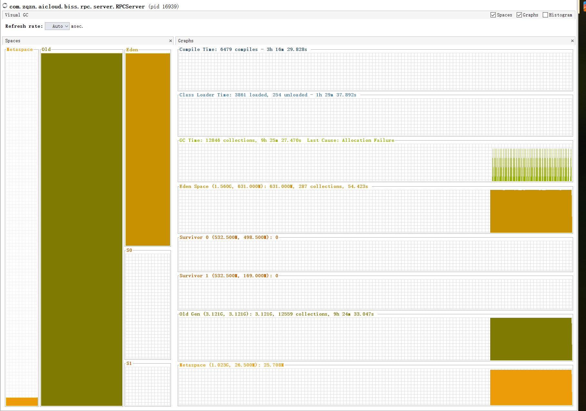

OOM了怎么办？
常见的内存泄漏情况有哪些？
如何定位解决内存泄漏问题？
问题描述
- 一个hbase的rpc_server程序，运行后tcp长连接接收rpc client端的请求操作hbase数据库；
- 程序运行一段时间（3小时）后抛出java.lang.OutOfMemoryError:Java heap space；
解决方案
先定位进程，再定位线程.
jps命令定位程序进程：jps -lvm | grep rpc找到程序pid- 服务端启动
jstatd远程监控服务 - 客户端以
jvisualvm工具连接jstatd端口，根据pid查看服务的运行情况； jvisualvm中安装visual gc插件，发现eden区每次回收后都有很多的survivor，survivor的1和2区交换几次满了后就都到old gen老年代去了，
导致每次回收后内存使用量一直在增长，内存使用曲线呈现45度锯齿状；

毫无疑问是内存泄漏了！！！
- 程序添加OOM时输出日dump志，java程序启动命令新增：
-XX:+HeapDumpOnOutOfMemoryError-XX:HeapDumpPath=/home/users/developer/service/log/mlp - 下一次OOM发生后将生成的dump文件导入jvisualvm中分析；
- dump分析发现最多的是char[]，类实例中大多是insert语句语句中涉及的参数：清楚明白了，是数据库连接未释放
- 数据库连接是本地连接池管理的，所以基本不释放，但dao中生成的preparestatement和resultset需要手动释放；
- 在finally中添加statement.close方法释放资源；
- 重新运行程序，世界一片美好，回复了正常的非倾斜的锯齿状内存占用曲线；
关于内存泄漏
上面的内存泄漏问题问题是解决了，深入拓展开：
- 什么是内存泄漏？JVM内存管理、JVM垃圾回收方式；
- 内存泄漏的常见原因是什么？内存分配不足；代码bug；
- 不同情况的内存泄漏有什么表现特征？各种OOM情况；
- 如何定位解决内存泄漏问题？代码定位、工具定位；
什么是内存泄漏？
- Java使用new为对象分配内存，而这些内存空间都在堆（Heap）上;
- 一个对象是否是垃圾的依据：
引用计数法，可达性算法实现; - Java内存回收采用
分代回收算法实现； - Java的一个重要特性就是通过垃圾收集器(GC)自动管理内存的回收，而不需要程序员自己来释放内存。理论上Java中所有不会再被利用的对象所占用的内存，都可以被GC回收，但是Java也存在内存泄露，但它的表现与C++不同。
Java中的内存管理
内存的释放，也即清理那些不可达的对象，是由GC决定和执行的，所以GC会监控每一个对象的状态，包括申请、引用、被引用和赋值等。释放对象的根本原则就是对象不会再被使用： - 给对象赋予了空值null，之后再没有调用过。
- 另一个是给对象赋予了新值，这样重新分配了内存空间。
通常，会认为在堆上分配对象的代价比较大，但是GC却优化了这一操作：C++中，在堆上分配一块内存，会查找一块适用的内存加以分配，如果对象销毁，这块内存就可以重用；而Java中，就像一条长的带子，每分配一个新的对象，Java的堆指针就向后移动到尚未分配的区域。所以，Java分配内存的效率，可与C++媲美。
但是这种工作方式有一个问题：如果频繁的申请内存，资源将会耗尽。这时GC就介入了进来，它会回收空间，并使堆中的对象排列更紧凑。这样，就始终会有足够大的内存空间可以分配。
- gc清理时的引用计数方式：当引用连接至新对象时，引用计数+1；当某个引用离开作用域或被设置为null时，引用计数-1，GC发现这个计数为0时，就回收其占用的内存。这个开销会在引用程序的整个生命周期发生，并且不能处理
循环引用的情况。所以这种方式只是用来说明GC的工作方式，而不会被任何一种Java虚拟机应用。 - 多数GC采用一种自适应的清理方式（加上其他附加的用于提升速度的技术），主要依据是找出任何“活”的对象，然后采用
自适应的、分代的、停止-复制、标记-清理式的垃圾回收器。
内存泄漏的常见原因是什么？
Java中的内存泄露，广义并通俗的说，就是：不再会被使用的对象的内存不能被回收，就是内存泄露。
Java中的内存泄露与C++中的表现有所不同。
- 在C++中，所有被分配了内存的对象，不再使用后，都必须程序员手动的释放他们。所以，每个类，都会含有一个
析构函数，作用就是完成清理工作，如果我们忘记了某些对象的释放，就会造成内存泄露。 - 但是在Java中，我们不用自己释放内存，无用的对象由GC自动清理，这也极大的简化了我们的编程工作。但，实际有时候一些不再会被使用的对象，在GC看来不能被释放，就会造成内存泄露。
对象都是有生命周期的，有的长，有的短，
如果长生命周期的对象持有短生命周期的引用，就很可能会出现内存泄露。
常见的内存泄漏情况
监听器
在释放对象的时候却没有去删除这些监听器，增加了内存泄漏的机会。
静态集合类
- 如
HashMap、ArrayList，静态容器中保有着其他无用对象的引用，会导致无用对象无法被回收，而静态的容器的生命周期是与进程生命周期一致的。 - 容器如HashSet中修改了其中的值，因为HashSet内部是封装了HashMap的，所以当对HashSet中的元素进行修改时，会改变该元素的HashCode，也就是说会改变该元素在HashMap中的存放位置，但是由于没有改变在HashSet中的存放位置，因此使用remove()方法都无法进行移除，这就会造成内存泄漏。（这里需要对HashCode和Equal方法进行重写）
各种连接(提供了close()方法的对象)
- 数据库连接（dataSourse.getConnection()），网络连接(socket)和io连接，除非其显式的调用了其close())方法将其连接关闭，否则是不会自动被GC回收的。
- JDBC中对于Resultset 和Statement 对象可以不进行显式回收，但Connection 一定要显式回收，因为Connection 在任何时候都无法自动回收，而Connection一旦回收，Resultset 和Statement 对象就会立即为NULL。
- 如果使用连接池，除了要显式地关闭连接，还必须显式地关闭Resultset和Statement 对象（关闭其中一个，另外一个也会关闭），否则就会造成大量的Statement 对象无法释放，从而引起内存泄漏。这种情况下一般都会在try里面去的连接，在finally里面释放连接。
单例模式
不正确使用单例模式是引起内存泄漏的一个常见问题，单例对象在初始化后将在JVM的整个生命周期中存在（以静态变量的方式），如果单例对象持有外部的引用，那么这个对象将不能被JVM正常回收，导致内存泄漏。
内部类
私有内部类（匿名的私有内部类也算）中会有一个外部类的引用，那么当内部类对象没有被销毁，外部类也不会被销毁，这一点很容易忽略从而造成内存泄漏.
外部模块的引用
要小心外部模块不经意的引用
- 例如程序员A负责A模块，调用了B模块的一个方法如： public void registerMsg(Object b); 这种调用就要非常小心了，传入了一个对象，很可能模块B就保持了对该对象的引用，这时候就需要注意模块B是否提供相应的操作去除引用。
如何定位解决内存泄漏问题？
排查工具
内存泄漏排查过程中涉及到的工具：
jps：查询进程jvisualvm、；综合监控：cpu、线程、内存、可视化gcjstat：jstat -gcutil查看jvm gc情况：jstat -gcutil 12743 1000 100jmap：导出堆转储文件：jmap -dump:live,format=b,file=20190803.dump pid